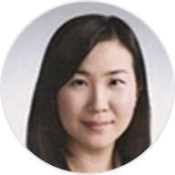

해빛아동발달센터 소개


해빛 인사말
아이들이 마음껏 자신을 표현할 수 있는
편안한 공간이 되기를 ···
아동학을 공부하고 현장에서 아이들과 함께한지 10년의 세월이 지났습니다.
그동안 여러 기관들을 거치면서 내 아이를 믿고 맡길 수 있는, 부모의 마음으로 아이들을
대하는 기관을 꿈꿔왔고, 이러한 생각으로 ‘해빛아동청소년발달센터’를 열게 되었습니다.
해빛은 정서, 발달, 언어, 감각에 어려움이 있는 아동, 청소년, 성인, 가족을 대상으로
상처받은 마음을 치유하고 지연된 발달을 촉진하는 공간입니다.
아이들에게는 마음껏 자신을 표현 할 수 있는 편안한 공간이 되기를, 부모님들에게는
고민을 나누고 해결 할 수 있는 공간이 되기를 희망합니다.
해빛은 해당분야의 최고의 전문가가 치료합니다.
1급 언어 재활사, 놀이치료 전문가, 아동학 박사, 가족 치료 전문가 등 해당분야의 전문성과
현장경험이 뛰어난 선생님들이 있습니다.
해빛은 각 분야의 협력이 원활히 진행되는 기관입니다.
언어치료와 심리치료 핵심적인 두 분야의 원장이 상주하여 각 치료 분야 전문가들과 정기적인
컨퍼런스를 통해 소통을 하고 있습니다.
각 분야 전문가들의 적극적인 협력은 아동의 빠른 치유와 회복을 도울 수 있을 것입니다.
해빛은 청결하고, 안전한 시설을 보유하고 있습니다.
교육기관에 있어 ‘청결’과 ‘안전’은 가장 기본이 되는 사항입니다.
해빛은 매주 교구 및 교재의 정기적인 소독을 하며, 법적 기준을 충족하는 방염/소방시설을
갖추고 있습니다.
해빛은 소외된 아동들의 건강한 성장을 위해 지역사회 및 도움이 필요한 기관을
자문하고 협력합니다. 아동양육시설, 요보호기관 등 도움이 필요하지만 도움을 받지 못하는
아동들의 성장도 함께 응원하며 나아가겠습니다. 우리 아이 만이 아닌 세상 모든 아동이
행복할 수 있도록 함께 나아가겠습니다.
해빛아동청소년발달센터 원장 김드롱/이유리 드림
해빛 전문가 소개
우리아이, 아무에게나 맡길 수 없죠!
- 놀이치료
- 언어치료
- 미술치료
- 감각통합
- 특수체육
- 인지치료
- 성인·가족상담
- 임상심리
-

놀이치료 원장 이유리
- 명지대학교 일반대학원 아동학과(아동심리치료전공) 석사 졸업
- 명지대학교 일반대학원 아동가족심리치료 박사 졸업
- 현) 명지대학교 (방목교양)객원교수
- 명지대학교 교육대학원 유아교육과 객원교수
- 명지전문대 사회복지학과 외래교수
- 와이제이평생교육원 교수
- 전) 김태우심리언어센터 임상심리사
- 신도림아동발달센터 놀이치료사
- 고양아동청소년 정신건강센터 집단상담사
- 청소년 근로복지센터 학교폭력, 근로, 진로예방 강사
- 양천 아이존/열린맘 아동청소년 상담센터 놀이치료사
- 전문상담사 2급(한국상담학회)
- 임상심리사 2급(산업인력공단)
- 보육교사 1급(보건복지부)
- 가정복지사 2급
- 치료놀이 초,중 고급 수료
-

놀이치료 김유진 선생님
- <학력>
- 인하대학교 아동학 전공
- 명지대학교 일반대학원
- 아동학, 아동가족심리치료전공(석사졸업)
- <경력>
- 명지대학교 아동가족심리치료센터
- 수정아동상담센터
- 세음심리발달연구소
- 아이앤아이소아정신과의원
- 허그맘허그인 성북센터
- <자격>
- 청소년상담사 3급
- 아동상담사 2급
- 보육교사 2급
-
놀이치료 조한솔 선생님
- <학력>
- 명지대학교 일반대학원 아동학과
- 아동가족심리치료 전공 (박사과정)
- 명지대학교 일반대학원 아동학과
- 아동가족심리치료전공 (석사 졸업)
- 명지대학교 사회과학대학 아동학 학사
- <경력>
- 국제아동발달클리닉 놀이치료사
- 국립국악원 유아누리 전문강사
- 명지대 아동가족심리치료 연구소 연구원
- <자격>
- 아동상담사 2급
- 유치원 정교사 2급
- 청소년상담사 2급
- 보육교사 2급
- 임상심리사 2급 (한국산업인력공단)
-

놀이치료 방정원 선생님
- <학력>
- 덕성여자대학교 심리학과, 미술사학과 졸업
- 덕성여자대학교 일반대학원 심리학과 졸업
- (발달 및 발달장애 전공)
- <경력>
- 열린맘 아동발달센터 놀이치료사
- 김포 마인드인상담센터 임상심리사
- 공릉 연아혜움아동발달센터 놀이치료사
- <자격>
- 청소년상담사 3급(보건복지가족부)
-

놀이치료 김은주 선생님
- <학력>
- 명지대학교 사회교육대학원 예술치료학과 졸업
- 서울디지털대학교 상담심리학과 졸업
- <경력>
- 동작종합사회복지관
- 목동아동발달센터
- 이화언어심리연구소
- <자격>
- 가족상담사 (국제지식인력개발원)
- 아동미술치료사 (숙명여대평생교육원)
- 놀이치료사 1급 (한국심리치료사협회)
- 표현예술심리치료2급 (표현예술심리치료협회)
- 전문예술심리치료사 (명지대학교)
- SDU상담사 2급 (서울디지털대학교)
- 유치원 2급 정교사 교원 자격증 (안양과학대학)
-
놀이치료 서정원 선생님
- <학력>
- 덕성여자대학교 심리학과, 미술사학과 졸업
- 덕성여자대학교 일반대학원 심리학과 졸업
- (발달 및 발달장애 전공)
- <경력>
- 열린맘 아동발달센터 놀이치료사
- 김포 마인드인상담센터 임상심리사
- 공릉 연아혜움아동발달센터 놀이치료사
- <자격>
- 청소년상담사 3급(보건복지가족부)
-
놀이치료 박상미 선생님
- <학력>
- 명지대학교 아동학과 아동가족심리치료전공
- <경력>
- 명지대학교 아동가족심리치료연구소
- <자격>
- 인지행동놀이상담사 2급 (한국인지행동치료상담학회)
-
언어치료 원장 김드롱
- 명지대학교 사회교육대학원 언어치료학과 석사졸업
- 동신대학교 언어치료학과 학사 졸업
- 전) 연세말언어인지연구소 연구원(2008~2009)
- 열린맘 아동청소년 상담센터(2009~2015)
- 상원여자중학교 특수학급 언어치료사
- 소중한아이정신과 언어치료사
- 연세대학교 재활학교 언어치료 강사(2011-2017)
- 1급 언어재활사(보건복지부령 국가자격증)
- 한국 언어재활사협회 정회원
-

언어치료 김란영 선생님
- <학력>
- 한림대학교 보건대학원 언어병리학과 석사 졸업
- 우송대학교 언어치료학과 졸업
- <경력>
- 연세언어청각연구원
- 서대문 아이존 언어재활사
- <자격>
- 1급 언어재활사 (보건복지부)
-
언어치료 김희영 선생님
- <학력>
- 나사렛 대학교 언어치료학과 학사 졸업
- 나사렛 대학교 언어치료학과 석사 졸업
- <경력>
- 쿰아동발달센터
- 마음드림심리상담센터
- 고려수 재활병원 부설 고려수 치료연구소
- <자격>
- 2급 언어재활사 (보건복지부)
- 인지학습상담전문가 2급(대한학습치료사협회)
-

언어치료 김은지 선생님
- <학력>
- 나사렛대학교 언어치료학과 졸업
- <경력>
- 함께가자 아동발달센터
- 고려수 재활병원 부설 고려수 치료연구소
- <자격>
- 2급 언어재활사 (보건복지부)
-
언어치료 강세빈 선생님
- <학력>
- 대구가톨릭대학교 언어치료청각학과 졸업
- <경력>
- 한국아동발달연구소
- 대구남구다문화가족지원센터
- 라온아동발달센터
- 광진아동심리발달지원센터
- <자격>
- 2급 언어재활사 (보건복지부)
-

언어치료 정정환 선생님
- <학력>
- 부산 가톨릭대학교 언어청각치료학과 졸업
- <경력>
- 부산 가톨릭대학교 언어청각치료학과 연구조교
- 장애정담 다솔어린이집
- 부산 센텀이루다재활병원
- 안양아벤스병원
- 서울대효병원
- <자격>
- 1급 언어재활사 (보건복지부)
-
언어치료 노유라 선생님
- <학력>
- 고려대학교 교육학 석사
- 단국대학교 특수교육(언어치료) 석사
- <경력>
- 중등 정교사
- <자격>
- 인지치료사
- 언어재활사 2급 (보건복지부)
-
언어치료 왕슬기 선생님
- <학력>
- 유원대학교 언어치료학과
- <경력>
- 한걸음 요양병원
- 유원대학교 언어치료연구소
-
언어치료 진한울 선생님
- <학력>
- 대림대학교 언어재활과
- <경력>
- 연수종합사회복지관
- <자격>
- 언어재활사 2급 (보건복지부)
-
미술치료 단정수 선생님
- <학력>
- 서울여자대학교 특수치료전문대학원
- - 표현예술치료학과/미술심리치료학과
- <경력>
- 굿네이버스 서울성동 좋은마음센터 부실장
- 김포아동발달센터 아동청소년상담/미술치료
- 인천광역시청소년상담복지센터
- 사우초등학교 미술치료
- 마송고등학교,신곡초등학교 특수학급 집단미술치료
- 서울시립동부병원 호스피스환자 및 보호자 미술치료
- 서울특별시 어린이병원 미술치료
- <자격,수련>
- 모래놀이상담사 2급 (한국모래놀이치료학회)
- MBTI 강사 (한국 MBTI연구소)
- 미술심리상담사 1급 (한국심성교육개발원)
-
미술치료 김초롱 선생님
- <학력>
- 서울여자대학교 기독교학과 학사
- 서울여자대학교 기독교·사회복지대학원 가족상담 석사
- <경력>
- 경동고등학교 상담실
- 초, 중, 고 인터넷 중독 예방 교육
- 포천종합사회복지관 상담
- 동두천시 건강가정지원센터
- 광진구 I will 센터
- 동두천시건강가정지원센터
- 서울발달심리센터
- 함께하는 아동청소년 센터
- 수색아동청소년상담센터
- <자격,수련>
- 상담심리사 (한국상담심리학회)
- 인터넷중독전문상담사 (한국정보문화진흥원)
- 건강가정사 (여성가족부)
- 미술치료 1.3.4.5단계 수료 (한국표현예술치료협회)
- 청소년상담사 2급 (여성가족부)
- 미술심리상담사 1급 (한국자격검정평가진흥원)
-
감각통합 박미남 선생님
- <학력>
- 대구보건대학교 작업치료학과
- <경력>
- 해빛 아동청소년발달센터 감각통합치료사
- 우리두리 아동발달센터 감각통합치료사
- <자격,수련>
- 작업치료사 (보건복지부)
- BLS-Provider
- 서울재활병원 교육 수료
- 대한감각통합치료학회 교육 수료
-
감각통합 이영주 선생님
- <학력>
- 극동대학교 작업치료학과
- <경력>
- 해빛 아동청소년발달센터 감각통합치료사
- 우리두리 아동발달센터 감각통합치료사
- <자격,수련>
- 작업치료사 (보건복지부)
- 서울재활병원 청소년 치료 세미나 수료
- 대한감각통합치료학회 감각통합 기초강좌 수료
- Clinical Rehabilitation Study 수료
- 대한 아동학교작업치료학회 교육 세미나 (뇌성마비) 수료
- 서울재활병원 소아작업치료 세미나 수료
-
감각통합 고보라 선생님
- <학력>
- 동남 보건 대학교 작업치료학과
- <경력>
- 해밀 아동발달센터
- 청라라파언어심리센터
- <자격,수련>
- 작업치료사 (보건복지부)
- 사회복지사 2급 (보건복지부)
- 척수손상임상치료 연수강좌 수료
- 대한감각통합치료학회 기본/심화 교육 수료
- 뇌성마비발생과 조기중재 이수
-
특수체육 임은주 선생님
- <학력>
- 인천대학교대학원 스포츠교육학 전공
- 한신대학교 특수체육학 전공
- <경력>
- 김포시장애아동재활치료센터
- 올림피아유소년스포츠클럽아이스포
- 한국운동재활협회
- <자격,수련>
- 아동특수체육지도사 (한국스포츠과학교육협회)
- 치료레크리에이션 (한국스포츠과학교육협회)
- 유아체육지도자 1급 (한국체력향상협회)
-
인지치료 문유미 선생님
- <학력>
- 건양대학교 초등특수교육과 졸업
- 중등특수교육과(복수전공)
- <경력>
- 현)해빛아동청소년발달센터 인지치료사
- 성민종합사회복지관 인지치료사
- 계양아동발달센터 인지치료사
- 전)대전아동가족클리닉 인지치료사
- 금천장애인종합복지관 인지치료사
- <자격>
- 초등특수정교사 2급
- 중등특수정교사 2급
-
성인/가족상담 김혜영 선생님
- <학력>
- 이화여자대학교 심리학 학사 전공
- 이화여자대학교 심리학 석사전공
- University of North Carolina at Chapel Hill
- 학교심리학 석사 전공
- <경력>
- 성모마음 정신과 부설 ETM 상담사
- 여명학교 상담사
- 아이코리아 아동발달교육 연구원
- 평택대학교 외래교수
- 서울대학교 외부강사
- <자격>
- 상담심리사(한국상담심리학회)
- 중독상담전문가(사단법인 아이코리아)
- 놀이심리상담사 1급(한국발달지원학회)
-
성인/가족상담 박진희 선생님
- <학력>
- 백석대학교상담대학원 가족상담학 전공 (석사졸업)
- <경력>
- 법무부남부보호관찰소 보호관찰청소년 집단상담 및 부모교육
- 한국가족상담코칭센터
- 서울시교육청 학부모 진로코치 위원
- 연합가족상담연구소
- 양천구청소년상담센터
- <자격>
- 한국상담학회 2급 및 재난상담사 (한국상담학회)
- 청소년상담사 (여성가족부)
- 건강가정사 (여성가족부)
- 부부상담 및 가족상담사 1급 (한국중앙가족상담협회)
- 인터넷중독상담사 (한국정보화진흥회)
-
임상심리사 서인재 선생님
- <학력>
- 중앙대학교 심리서비스대학원 임상심리학과 전공
- <경력>
- 서울시 아동양육시설 임상심리사
- 서울지역 경찰서 범죄심리사
- 초등학교 의무교육학생관리위원회 위원
- 경기도 아동양육시설 임상심리사
- 부산 영도병원 신경과 임상심리사
- <자격>
- 임상심리사 2급 (한국산업인력공단 보건복지부)
- 청소년상담사 3급 (여성가족부)
- 놀이심리상담사 1급 (한국심리치료사협회)
- 미술심리상담사 1급 (한국심리치료사협회)
- 아동트라우마 전문상담사 2급 (사회서비스연구소 한울)
-
성인/가족상담 조한솔 선생님
- <학력>
- 명지대학교 일반대학원 아동학과
- 아동가족심리치료 전공 (박사과정)
- 명지대학교 일반대학원 아동학과
- 아동가족심리치료전공 (석사 졸업)
- 명지대학교 사회과학대학 아동학 학사
- <경력>
- 국제아동발달클리닉 놀이치료사
- 국립국악원 유아누리 전문강사
- 명지대 아동가족심리치료 연구소 연구원
- <자격>
- 임상심리사 2급
- 아동상담사 2급
- 유치원 정교사 2급
- 청소년상담사 2급
- 보육교사 2급
-
임상치료 류은주 선생님
- <학력>
- <자격>
해빛 시설보기
‘청결’과 ‘안전’을 준수하는 편안한 해빛 시설에서
아이들과 함께 꿈을 그려나갑니다!
- 화곡점
- 마곡점
-

화곡점서울특별시 강서구 강서로 210, 401호 6층02.2665.1175
-

마곡점서울특별시 강서구 마곡중앙1로 26, 501호-504호02.2606.1175
-

마곡점서울특별시 강서구 마곡중앙1로 26, 501호-504호02.2606.1175
-

마곡점서울특별시 강서구 마곡중앙1로 26, 501호-504호02.2606.1175
-

마곡점서울특별시 강서구 마곡중앙1로 26, 501호-504호02.2606.1175
든든한 해빛과 함께
안전한 동행
해빛 오시는길
서울특별시 강서구 강서로 210, 상광빌딩 4층 (맥도날드 우장산 DT점 옆 건물)
자세히 보기